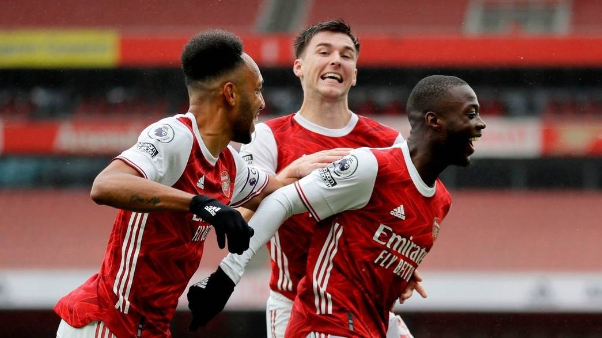

ARSENAL vs Shieffleid
October 4, 2020 By Rob KellyTwo goals in the space of three minutes from Bukayo Saka and Nicolas Pepe helped seal a hard-fought victory against Sheffield United that takes us up to fourth in the table. In truth, there was little of note in the first half but we came alive after the restart. Firstly Saka – in the week he received his first call up to the senior England squad – headed home a Hector Bellerin cross, before Pepe – again assisted by our right back – doubled our advantage. David McGoldrick pulled one back for the Blades late on, but we saw the game out to claim three valuable points.
 The game got off to a cagey start and never seriously threatened to move out of first gear throughout the opening 45 minutes. Pierre-Emerick Aubameyang came closest with a long-range strike that was tipped over, but that was the only opportunity of note for either side as the rain swept down in N5. We upped the tempo after the interval, and Dani Ceballos’ incisive first-time pass soon nearly picked out Aubameyang in the area but just evaded our captain. Pepe came on to try to add some impetus to our attack, and within minutes we had the lead as Aubameyang found Bellerin in the box and he picked out Saka to head into the roof of the net. Three minutes later we had our second as Bellerin found Pepe down the right, and the Ivorian showed his scorching pace to get away from his man before slotting the ball low into the far corner.
McGoldrick set up a grandstand finish by curling a shot beyond Bernd Leno and into the far corner for the visitors with seven minutes remaining. But despite some pressure from the Blades – and a late opportunity for McGoldrick deep in injury time - we held on to claim the points.